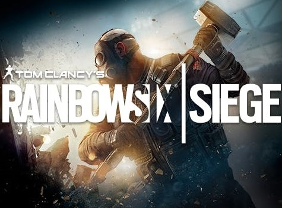
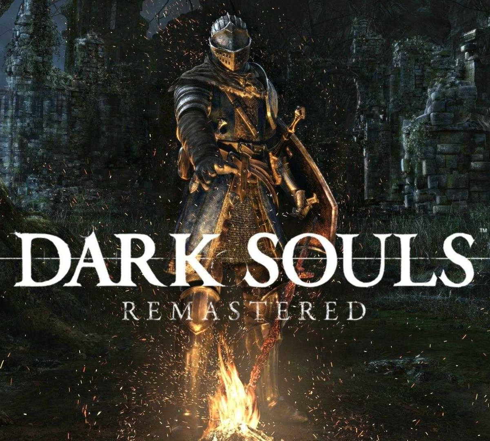
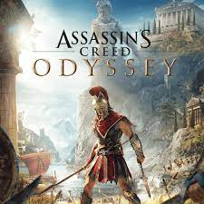
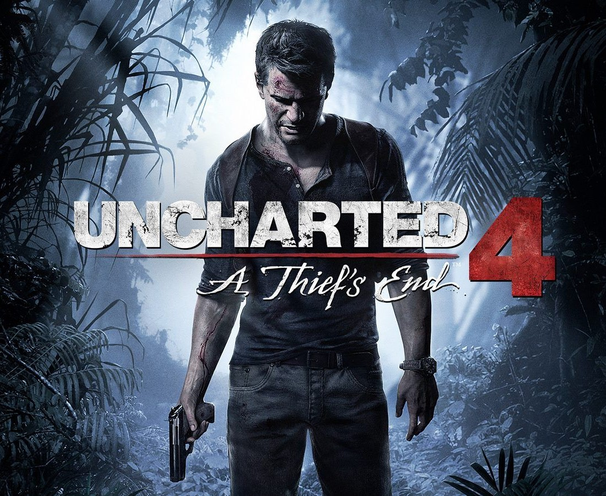

BATTLEFIELD

Battlefield
Battlefield je série stříleček z pohledu první osoby vyvinutá švédskou společností EA DICE a vydávaná americkou společností Electronic Arts. Začalo to na Microsoft Windows a OS X s Battlefield 1942, který byl vydán v roce 2002. Sérii Battlefield hrálo od roku 2012 více než 50 milionů hráčů po celém světě v 11 hrách a 12 rozšiřujících balíčcích vydaných od jejího založení v roce 2002. Série se zaměřuje zejména na velké mapy, týmovou práci a válčení vozidel. PC hry v této sérii jsou zaměřeny především na online multiplayer.Hraní
Hry ze série Battlefield se obvykle zaměřují na velké online bitvy pro více hráčů. Hraní v četách se stalo hlavním prvkem her v sérii. Kromě vojáků se těchto bitev mohou zúčastnit také tanky, letadla a další vozidla. Od Battlefieldu 2 série centrálně zaznamenávala online statistiky pro každého hráče, což uživatelům umožňovalo získávat hodnostní povýšení a odemykání zbraní na základě jejich výkonu a také ocenění, jako jsou medaile, stuhy a odznaky. Systém tříd je přítomen ve všech hrách Battlefield. Každá třída obsahuje jiný typ primární zbraně spolu s různým vybavením, které odlišují role na bojišti. Možnost zapojit ostatní hráče do boje na blízko s nožem byla přítomna ve hrách Battlefield. Od Battlefield 2142 obsahuje série udělování psích známek za každého hráče zabitého nožem. Od představení Frostbite se téměř plně zničitelné mapy staly jedním z nejznámějších prvků této série.Historie vývoje
Battlefield 1942 byl propuštěn 10. září 2002 s použitím herního enginu Refractor a zasazen do druhé světové války. Představil herní režim „Conquest“, ve kterém hráči bojovali o „kontrolní body“ po celé mapě. Byly vydány dva rozšiřující balíčky. Battlefield Vietnam, vydaný v roce 2004, přesunul prostředí do války ve Vietnamu a byl postaven na aktualizovaném enginu Refractor s různými herními vylepšeními, jako je schopnost střílet z osobních zbraní, když sedíte ve vozidlech, a vizualizace hustého listí. Vydání Battlefield 2 z roku 2005 se odehrává v moderní době a zobrazuje válku mezi Spojenými státy a Čínou a fiktivní koalicí Středního východu (MEC). Navzdory nutnosti četných oprav kvůli velkému počtu chyb a závad ve hře po jejím vydání, měla velký komerční úspěch a do července 2006 se prodalo po celém světě více než 2 250 000 kopií. Jeden rozšiřující balíček, Special Forces, který přidal Rusko, exkluzivní Byly také vydány mise a nové zbraně a pomůcky a dva posilovací balíčky, Armored Fury (přidává tři nové bitvy v USA) a Euro Force (přidává Evropskou unii). Podobná hra s názvem Battlefield 2: Modern Combat byla vydána pro konzole, s větším režimem pro jednoho hráče, ale omezeným online hraním.více
RAINBOW SIX
Rainbow Six Siege
Tom Clancy's Rainbow Six Siege je online taktická střílečka vyvinutá společností Ubisoft Montreal a publikovaná společností Ubisoft. Bylo vydáno celosvětově pro Microsoft Windows, PlayStation 4 a Xbox One 1. prosince 2015; hra byla vydána také pro PlayStation 5 a Xbox Series X/S přesně o pět let později, 1. prosince 2020. Hra klade velký důraz na ničení životního prostředí a spolupráci mezi hráči. Každý hráč převezme kontrolu nad útočníkem nebo obráncem v různých herních režimech, jako je záchrana rukojmí, zneškodnění bomby a převzetí kontroly nad cílem v místnosti. Titul nemá žádnou kampaň, ale obsahuje sérii krátkých, offline misí zvaných „situace“, které lze hrát samostatně. Tyto mise mají volný příběh a zaměřují se na rekruty procházející výcvikem, který je má připravit na budoucí setkání s „Bílí maskami“, teroristickou skupinou, která ohrožuje bezpečnost světa.
Siege je vstupem do série Rainbow Six a nástupcem Tom Clancy's Rainbow 6: Patriots, taktické střílečky, která se více zaměřovala na vyprávění. Poté, co byl Patriots nakonec zrušen kvůli jeho technickým nedostatkům, Ubisoft se rozhodl restartovat franšízu. Tým vyhodnotil jádro franšízy Rainbow Six a věřil, že umožnit hráčům vydávat se za nejlepší protiteroristické agenty po celém světě hře nejvíce vyhovuje. K vytvoření autentických situací obléhání tým konzultoval skutečné protiteroristické jednotky a podíval se na skutečné příklady obléhání, jako bylo obléhání íránského velvyslanectví v roce 1980. Hra je poháněna AnvilNext 2.0 a také využívá technologii RealBlast společnosti Ubisoft k vytváření zničitelných prostředí.
Hra se setkala s celkově pozitivním přijetím od kritiků, přičemž chvála většinou směřovala k napjatému multiplayeru hry a zaměření na taktiku. Hra však byla kritizována za systém progrese a nedostatek obsahu. Počáteční prodeje byly slabé, ale hráčská základna hry výrazně vzrostla, protože Ubisoft pro hru přijal model „hry jako služba“ a následně vydal několik balíčků obsahu ke stažení zdarma. Několik let po vydání hry někteří kritici považovali Siege za jednu z nejlepších her pro více hráčů na moderním trhu kvůli vylepšením, která přinesly aktualizace po uvedení na trh. Společnost se spojila s ESL, aby se Siege stala esportovou hrou. V prosinci 2020 hra překonala 70 milionů registrovaných hráčů na všech platformách. Rainbow Six Extraction, spin-off hra s postavami Siege, byla vydána v lednu 2022.
více
CALL OF DUTY

Call Of Duty
Call of Duty je franchise videoher z pohledu první osoby, kterou vydala společnost Activision. Od roku 2003 se nejprve zaměřil na hry zasazené do druhé světové války. Postupem času se série dočkala her odehrávajících se uprostřed studené války, futuristických světů a vesmíru. Hry byly nejprve vyvinuty Infinity Ward, poté také Treyarch a Sledgehammer Games. Několik vedlejších a kapesních her bylo vyrobeno jinými vývojáři. Nejnovější titul, Call of Duty: Vanguard, byl vydán 5. listopadu 2021.
Série se původně zaměřovala na prostředí druhé světové války, přičemž Infinity Ward vyvinula první (2003) a druhý (2005) titul v sérii a Treyarch vyvinul třetí (2006). Call of Duty 4: Modern Warfare (2007) představilo nové, moderní prostředí a ukázalo se, že jde o průlomový titul pro sérii, čímž vznikla podsérie Modern Warfare. Odkaz hry také ovlivnil vytvoření remasterované verze, která vyšla v roce 2016. Byly vytvořeny další dva záznamy, Modern Warfare 2 (2009) a Modern Warfare 3 (2011). Podsérie se dočkala restartu s Modern Warfare v roce 2019. Infinity Ward také vyvinuli dvě hry mimo podsérii Modern Warfare, Ghosts (2013) a Infinite Warfare (2016). Treyarch vytvořil poslední hru založenou na druhé světové válce, World at War (2008), předtím, než vydal Black Ops (2010) a následně vytvořil podsérii Black Ops. Byly vytvořeny čtyři další záznamy, Black Ops II (2012), III (2015), 4 (2018) a Cold War (2020), poslední ve spojení s Raven Software. Sledgehammer Games, kteří byli spoluvývojáři pro Modern Warfare 3, také vyvinuli tři tituly, Advanced Warfare (2014), WWII (2017) a Vanguard (2021).
V dubnu 2021 se série prodalo přes 400 milionů kopií.[1] S novými hrami v této sérii, které se každoročně vydávají na trhové úrovni, je série ověřena Guinessovou knihou rekordů jako nejprodávanější série stříleček z pohledu první osoby. Je to také nejúspěšnější franšíza videoher vytvořená ve Spojených státech a třetí nejprodávanější franšíza videoher všech dob. Mezi další produkty této franšízy patří řada akčních figurek navržená společností Plan B Toys, karetní hra vytvořená společností Upper Deck Company, sady Mega Bloks od společnosti Mega Brands a minisérie komiksů vydaná společností WildStorm Productions.
více
DARK SOULS
Dark Souls
Dark Souls je akční RPG z roku 2011 vyvinutá společností FromSoftware a vydaná společností Namco Bandai Games. Tato hra je duchovním nástupcem Demon's Souls od FromSoftware a je druhým dílem série Souls. Dark Souls se odehrává v království Lordran, kde hráči převezmou roli prokleté nemrtvé postavy, která začíná pouť za odhalením osudu svého druhu. V srpnu 2012 byl vydán port pro Microsoft Windows, který obsahoval další obsah, který nebyl k vidění v původních verzích pro PlayStation 3 a Xbox 360. V říjnu 2012 vyšel nový obsah pro konzole pod podtitulem Artorias of the Abyss.
Dark Souls byla citována jako jedna z největších videoher všech dob. Kritici chválili hloubku jeho boje, složitý design úrovní a použití chuťového textu. Obtížnost hry však obdržela smíšené recenze, někteří ji kritizovali za příliš nemilosrdnou. Původní verze hry pro Windows byla méně dobře přijata, s kritikou zaměřenou na několik technických problémů. Do dubna 2013 se hry prodalo přes dva miliony kopií po celém světě. Dvě pokračování byla vydána v polovině roku 2010, zatímco remasterovaná verze byla vydána v roce 2018.
Dark Souls je akční hra na hrdiny z pohledu třetí osoby. Základní mechanikou hry je průzkum. Hráči jsou vyzýváni, aby postupovali opatrně, poučili se z minulých chyb nebo našli alternativní oblasti k prozkoumání. Dark Souls se odehrává ve velkém a nepřetržitém prostředí otevřeného světa, propojeného prostřednictvím centrální oblasti hub. Hráčská postava může libovolně cestovat mezi oblastmi a prozkoumávat různé cesty, i když k odemknutí určitých oblastí musí být splněny předpoklady.
Ústředním prvkem hry Dark Souls je oheň. Ohně jsou roztroušeny po celém světě a slouží jako kontrolní body pro každou úroveň. Odpočinkem u ohně se hráčská postava plně uzdraví a znovu získá všechny léčivé náboje ze své „Estus Flask“. Mohou také zvyšovat úroveň a provádět další funkce, jako je ladění magie a oprava a vylepšení vybavení. Odpočinkem u ohně se však znovu objeví všichni nepřátelé světa, kromě bossů, mini-bossů a přátelských nehratelných postav.
Interakce hráčské postavy se světem Dark Souls zahrnuje velké množství bojů. Boj zahrnuje útoky na blízko, různé formy obranného manévrování a magické schopnosti. Pro útoky zblízka mají hráčské postavy přístup k široké škále vysoce fantasy zbraní středověkého stylu – včetně mečů, kopí, palcátů a fantastických zbraní, jako jsou magické meče, obrovské meče a obrovské kyje. Pro obranu mají hráčské postavy přístup ke štítům, brnění, uhýbání a odrážení. Pro magii, která zahrnuje širokou škálu útočných a obranných schopností známých jako čarodějnictví, zázraky a pyromancie, nepoužívají hráčské postavy žádnou formu many jako ve většině ostatních fantasy RPG. Místo toho získávají diskrétní počet použití pro každé naladěné kouzlo, když odpočívají u ohně. Všechny tyto různé formy boje mají své kompromisy, variace a náklady ve hře. Všechny je lze nějakým způsobem vylepšit nebo pozměnit pomocí levelování, kovářství, spotřebních předmětů, magických prstenů a nového vybavení.
více
THE WITCHER

The Witcher
Zaklínač je série šesti fantasy románů a 15 povídek polského autora Andrzeje Sapkowského. Seriál se točí kolem stejnojmenného „zaklínače“, Geralta z Rivie. V dílech Sapkowského jsou „zaklínači“ lovci zvířat, kteří v mladém věku rozvinou nadpřirozené schopnosti bojovat s divokými zvířaty a monstry. Zaklínač začal titulární povídkou z roku 1986, kterou Sapkowski přihlásil do soutěže pořádané časopisem Fantastyka a označil ji jako svůj autorský debut. Kvůli čtenářské poptávce napsal Sapkowski 14 dalších příběhů, než v roce 1994 zahájil sérii románů. Známý jako Zaklínačská sága, psal jednu knihu ročně až do pátého a posledního dílu v roce 1999. Samostatný prequel román Sezóna bouří byl zveřejněno v roce 2013.
Knihy byly popsány jako kultovní v Polsku a zemích střední a východní Evropy. Byly přeloženy do 37 jazyků a k prosinci 2019 se jich po celém světě prodalo přes 15 milionů kopií. Byly také adaptovány do filmu (Zaklínač), dvou televizních seriálů (Zaklínač a Zaklínač), trilogie videoher (Zaklínač Witcher, The Witcher 2: Assassins of Kings a The Witcher 3: Wild Hunt) a série grafických románů. Videohry byly ještě úspěšnější, k květnu 2020 se jich prodalo více než 50 milionů kopií.
V roce 1985 byl Andrzej Sapkowski 38letý cestující prodavač kožešin s ekonomickým vzděláním a láskou k fantasy literatuře. Rozhodl se přihlásit do soutěže povídek, omezené na 30 stran, pořádané polským sci-fi a fantasy časopisem Fantastyka. Odeslal "The Witcher" (1986), musel čekat asi rok na výsledky a skončil na třetím místě. Sapkowski se domnívá, že jeho práce byla nejlepší v soutěži, ale porotci ji odsunuli na třetí místo, protože fantasy bylo tehdy v Polsku považováno za téma pro děti. Reakce čtenářů však byla v drtivé většině pozitivní a Sapkowski na jejich poptávku napsal více příběhů.
První čtyři příběhy zabývající se zaklínačem Geraltem z Rivie byly shromážděny v roce 1990 do sbírky povídek s názvem Zaklínač – nyní se již nevydává – vydavatelem Reportér. Zahrnuje "Cestu bez návratu" ("Droga, z której się nie wraca"), která se odehrává před příběhy Zaklínače a představuje Geraltovu budoucí matku.
SuperNowa se poté stala vydavatelem série a vydala druhou sbírku povídek, Sword of Destiny, v roce 1992. Ačkoli Poslední přání vyšlo v roce 1993, nahradilo The Witcher jako první kniha, protože obsahuje všechny jeho příběhy kromě „The Road“. with No Return“ (jediný příběh bez Geralta). Přestože do Posledního přání byly přidány nové povídky, odehrávají se chronologicky před těmi v Meči osudu.
Ačkoli „Cesta bez návratu“ a „Něco končí, něco začíná“ („Coś się kończy, coś się zaczyna“), alternativní konec ságy Zaklínač o svatbě Geralta a Yennefer, který byl napsán jako svatební dar pro Sapkowského přátele , byly později publikovány v Něco končí, něco začíná (2000) a Maladie a jiné příběhy (Maladie i inne opowiadania, 2012), ostatní příběhy v těchto sbírkách nejsou se sérií spojeny. V některých polských vydáních jsou tyto dva příběhy přidány k Poslednímu přání nebo Meči osudu.
více
GOD OF WAR

God Of War
V roce 1985 byl Andrzej Sapkowski 38letý cestující prodavač kožešin s ekonomickým vzděláním a láskou k fantasy literatuře. se přihlásit do soutěže povídek, rozhodnuto na 30 stran, pořádané polským sci-fi a fantasy časopisem Fantastyka. Odeslal "The Witcher" (1986), musel čekat asi rok na výsledky a skončil na třetím místě. Sapkowski se domnívá, že jeho práce byla nejlepší v soutěži, ale porotci ji odsunuli na třetí místo, protože fantasy bylo tehdy v Polsku za téma pro děti. Reakce čtenářů však byla v drtivé většině pozitivní a Sapkowski na jejich poptávku napsal více příběhů.
První čtyři příběhy zabývající se zaklínačem Geraltem z Rivie byly shromážděny v roce 1990 do sbírky povídek s názvem Zaklínač – nyní se již nevydává – vydavatelem Reportér. Zahrnuje "Cestu bez návratu", která se odehrává před příběhy Zaklínače a představuje Geraltovu budoucí matku.
SuperNowa se poté stala vydavatelem série a vydala druhou sbírku povídek, Sword of Destiny, v roce 1992. Přestože Poslední přání vyšlo v roce 1993, nahradilo The Witcher jako první kniha, protože obsahuje všechny jeho příběhy kromě „The Road“. with No Return“ (jediný příběh bez Geralta). Ačkoli do Posledního přání byly přidány nové povídky, odehrávají se chronologicky před těmi v Meči osudu.
I když „Cesta bez návratu“ a „Něco končí, něco začíná“ („Coś się kończy, coś się zaczyna“), alternativní konec ságy Zaklínač o svatbě Geralta a Yennefer, který byl napsán jako svatební dar pro Sapkowského přátele, byly později publikovány v Něco končí, něco začíná (2000) a Maladie a jiné příběhy (Maladie i inne opowiadania, 2012), ostatní příběhy v těchto sbírkách nejsou se sérií spojeny. V některých polských vydáních jsou tyto dva příběhy přidány k Poslednímu přání nebo Meči osudu.
více
ASASSINS CREED
Assasins Creed
Assassin's Creed je open-world akční dobrodružná stealth videoherní franšíza vydaná společností Ubisoft a vyvinutá především jejím studiem Ubisoft Montreal pomocí herního enginu Anvil a jeho pokročilejších derivátů. Série Assassin's Creed, kterou vytvořili Patrice Désilets, Jade Raymond a Corey May, zobrazuje fiktivní tisíciletí starý boj mezi assassiny, kteří bojují za mír a svobodnou vůli, a templáři, kteří touží po míru prostřednictvím řádu a kontroly. Série obsahuje historickou fikci, sci-fi a fiktivní postavy propojené s historickými událostmi a postavami ze skutečného světa. Ve většině her hráči ovládají historického vraha a zároveň hrají jako zasvěcenec vraha nebo někdo, kdo byl v současném rámcovém příběhu chycen v konfliktu asasínů a templářů. Assassin's Creed, považovaný za duchovního nástupce série Prince of Persia, čerpal inspiraci z románu Alamut slovinského spisovatele Vladimira Bartola, založeného na historické sektě Hashashin ze středověkého Blízkého východu. Titulní první titul série byl vydán v roce 2007 a obsahuje celkem dvanáct hlavních her, z nichž poslední je Valhalla z roku 2020. Hlavní hry Assassin's Creed jsou zasazeny do otevřeného světa a prezentovány z pohledu třetí osoby. Hratelnost se točí kolem boje, stealth a průzkumu, včetně využití parkouru k procházení prostředí. Hry obsahují hlavní i vedlejší mise a některé tituly (počínaje Brotherhood z roku 2010) také obsahují kompetitivní a kooperativní herní režimy pro více hráčů.
V každém příspěvku je představen nový příběh a příležitostně nové časové období a herní prvky se vyvíjejí z předchozího. V sérii jsou tři zastřešující příběhové oblouky. Prvních pět hlavních her sleduje Desmonda Milese, potomka několika důležitých asasínů v historii, který používá stroj zvaný Animus k oživení vzpomínek svých předků a nalezení mocných artefaktů zvaných „Pieces of Eden“ a zároveň se snaží zabránit katastrofické události. řekl, že vyhladí lidstvo do konce roku 2012. Od Assassin's Creed IV: Black Flag a až do Assassin's Creed Syndicate, Assassin iniciuje a zaměstnanci Absterga (společnosti používané jako kryt moderními templáři) zaznamenávají genetické vzpomínky pomocí Helix software, který pomáhá templářům a vrahům najít nové kousky ráje v moderním světě. Poslední tři hry, Assassin's Creed Origins, Assassin's Creed Odyssey a Assassin's Creed Valhalla, sledují bývalou zaměstnankyni Absterga Laylu Hassanovou na jejím vlastním pátrání po záchraně lidstva před další katastrofou.
Hlavní hry v sérii videoher Assassin's Creed získaly obecně pozitivní recenze pro své ambice v oblasti vizuálů, herního designu a příběhů, s kritikou za roční cyklus vydávání, časté chyby a posun směrem k upřednostňování mechanismů hraní rolí. Série Assassin's Creed získala řadu ocenění a nominací, včetně několika cen Hra roku. Je komerčně úspěšná, k říjnu 2020 se prodalo přes 155 milionů kopií a stala se nejprodávanější franšízou Ubisoftu a jednou z nejprodávanějších franšíz videoher všech dob. Zatímco hlavní tituly jsou vyráběny pro hlavní konzole a desktopové platformy, bylo vydáno několik vedlejších her pro konzole, mobilní telefony a platformy handheldů. Byla vydána také řada uměleckých knih, encyklopedií, komiksů, novelizací a románů. V roce 2016 byla vydána živě akční filmová adaptace Assassin's Creed, která obdržela obecně negativní recenze od fanoušků a kritiků.
více
UNCHARTED
Uncharted
Uncharted je série akčních dobrodružných her vytvořených Amy Hennigovou. Hry vyvíjí Naughty Dog a vydává Sony Interactive Entertainment pro konzole PlayStation. Hlavní série her sleduje Nathana Drakea, lovce pokladů, který cestuje po celém světě, aby odhalil různá historická tajemství.
Hlavní série začala hrou Uncharted: Drake's Fortune, která vyšla na PlayStation 3 v roce 2007, následovala její pokračování Uncharted 2: Among Thieves (2009), Uncharted 3: Drake's Deception (2011), s posledním dílem Uncharted 4: A Thief's. End, vydané na PlayStation 4 v roce 2016. Prequel, Uncharted: Golden Abyss, byl vydán pro kapesní systém Sony PlayStation Vita v roce 2011, po něm následoval spin-off karetní hry Uncharted: Fight for Fortune v roce 2012. Samostatná hra pro série, Uncharted: The Lost Legacy, byla vydána v roce 2017, s Chloe Frazer jako hratelnou protagonistkou hry.
Série byla všeobecně uznávaná a komerčně úspěšná, protože se jí prodalo více než 41 milionů kusů, což z ní dělá jednu z nejprodávanějších franšíz videoher všech dob. Hlavní série byla široce uznávána kritiky a videoherními publikacemi za zvýšení standardů videoher pro jednoho hráče, chválí ji za vysokou produkční hodnotu, kvalitu vyprávění, design postav a animaci, hlasové hraní, realistickou grafiku, technické inovace, hudební skóre, herní mechanismy a poskytování příjemného filmového herního zážitku hráčům. Seriál byl často přirovnáván k hollywoodským akčním dobrodružným filmům.
Podle bývalého vývojáře Naughty Dog Lucase Popea čerpala franšíza inspiraci ze série Gears of War, přičemž první hra Uncharted byla odložena po vydání první hry Gears of War, aby se různé základní herní a technické prvky více podobaly a působily jako ten druhý.
Kritický a komerční úspěch her Uncharted byl klíčový pro úspěch PlayStation během sedmé a osmé generace videoherních konzolí a pomohl pozvednout pověst Naughty Dog na vysoce uznávaného vývojáře videoher v tomto odvětví.
více
MAFIA

Mafia
Mafia je akční dobrodružná hra z roku 2002 vyvinutá společností Illusion Softworks a vydaná společností Gathering of Developers. Hra byla vydána pro Microsoft Windows v srpnu 2002 a později portována na PlayStation 2 a Xbox v roce 2004. Jedná se o první díl ze série Mafia. Příběh se odehrává ve fiktivním městě Lost Heaven v Illinois ve třicátých letech 20. století a sleduje vzestup a pád taxikáře, z něhož se stal mafián Tommy Angelo v zločinecké rodině Salieri.
Mafia obdržela pozitivní recenze na verzi pro Windows, přičemž kritici hru chválili za její komplexní příběh a realismus, zatímco verze pro PlayStation 2 a Xbox obdržely smíšené recenze. Pokračování, Mafia II od 2K Czech, bylo vydáno v srpnu 2010 a třetí hra, Mafia III od Hangar 13, byla vydána v říjnu 2016. Remake hry s názvem Mafia: Definitive Edition, rovněž vyvinutý Hangar 13, vyšlo v září 2020.
Dějová hra Mafie se skládá z jízdy, hlavně z lehkých plaveb městem mezi různými lokacemi, stejně jako z honiček a závodů; zbytek hry je založen na pěší navigaci a střelbě z pohledu třetí osoby – vše je propojeno s cutscénami. Kromě města a venkova jsou zahrnuty detailní interiéry, jako je městské letiště, muzeum, kostel, hotel, opuštěné vězení, restaurace a bar Dona Salieriho. Používají se změny počasí a cykly den/noc, i když na rozdíl od Grand Theft Auto se mise konají ve stanovený čas a počasí je po dobu trvání úrovně fixní.
51 klasických amerických aut po městě lze řídit v Mafii plus 19 bonusových aut (z toho 5 závodních modelů), které lze odemknout po hlavním režimu a otevření nového herního režimu. Auta jsou představována pravidelně – na začátku hry jezdí po ulicích města modely z počátku 20. let, zatímco modely z počátku 30. let se začínají objevovat v pozdějších fázích hry. Všechna vozidla jsou založena na skutečných autech z té doby, i když byla přejmenována a přepracována kvůli problémům s autorskými právy.
Policie eviduje hráče za drobné přestupky, jako je překročení rychlosti nebo jízda na červenou, a dopravní nehody způsobí fyzické poškození jedoucího hráče. I když jsou k dispozici jiné formy dopravy, jako jsou tramvaje a vyvýšené koleje, je možné na nich pouze jezdit a hráč je nemůže řídit.
Mafia je známá tím, že má komplexní fyziku poškození na téměř všech vozidlech, a to dokonce tak daleko, že využívá deformace v reálném čase, ve srovnání s vozidly v jiných hrách, které používaly předem připravené modely poškození. I když jsou menší a slabší vozidla podstatně robustnější než jejich skutečné protějšky, jsou menší a slabší, než se porouchají a nakonec explodují, než velká obrněná vozidla. Ve srovnání s jinými hrami stejného žánru je zde přidáno více realismu, jako je schopnost propíchnout palivovou nádrž, přehřát motor a schopnost rozbít převodovky. Mnoho vnějších komponentů (jako jsou okna, pneumatiky, světlomety a nárazníky) lze z většiny vozidel odstranit fyzickými prostředky, jako je nárazová jízda, údery tupými zbraněmi (pěsti, baseballová pálka) a také střelba ze zbraní.
Dokončením hlavní příběhové linie se odemkne režim „Freeride Extreme“, který je v podstatě stejný jako Freeride, ale s přidanou výhodou kaskadérských skoků, vedlejších úkolů a nedostatku policejních hlídek. Vedlejší mise v tomto režimu sahají od triviálních, jako je přenášení balíčků nebo zabíjení gangsterů, až po extrémní a někdy výstřední, jako je pronásledování mimozemské vesmírné lodi nebo řízení náklaďáku s výbušninami při určité rychlosti.
více